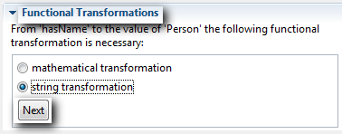

|

|
|
Mapping Ontologies |
|
|
|
|
Mapping Ontologies |
OntoMap is a plug-in for the ontology-management platform OntoStudio. You can create and manage ontology mappings using a graphical interface:
Mappings can be specified based on graphical representation, using a schema-view of the respective ontologies. You just have to understand the semantics of the graphical representation (e.g. an arrow connecting two classes), you do not have to worry about the logical representation of mappings. You are supported with the help of drag-and-drop functionality and simple consistency checks on property-mappings (automatic suggestion of necessary class-mappings).
Consider this before starting a mapping:
| • | OntoMap allows the creation of different "Mapping" types (class to class, property to class, property to property). |
| • | Before you can map properties to the target ontology, there must be an attribute-class or a class-class "Mapping", which specifies the identifier for the mapped instances within the Target ontology. |
| • | Filters can be specified for "class-to-class"- and "attribute-to-class"-mappings with which you can limit those mapped instances based on their property values. |
Action Buttons for Mapping:
1 |
Shows/hides all of the properties of the ontologies |
2 |
Opens a dialog for selecting target ontologies |
3 |
Opens a dialog for selecting source ontologies |
Precondition:
| • | The Integration perspective is active (-> Other... -> Integration). |

| 1. | Drag&Drop your source ontology to the top left-hand box of the Mapping window: |
The class hierarchy of the ontology appears in this top left-hand box:
When selecting a class its properties are shown within the class detail tree.
| 2. | Drag&Drop your target ontology to the top right-hand box of the Mapping window. |
The class hierarchy of the ontology appears in this top right-hand box.
| 3. | Drag&Drop a class from the source ontology (left-hand side) onto a class from the target ontology (right-hand side): |
A mapping between the two classes is created and represented by an arrow.
Another way to create mappings is to use a mapping pattern. Mapping patterns are suggested in the mapping pane. Depending on the actual selection within the source and target ontology, different templates are suggested. When choosing a template the system guides you through the mapping definition process. In this process you can fill out all of the necessary parameters needed for creating the mapping.
| 4. | You can create a filter within the mapping pane: Fill out the fields in the Filters pane and click on Add: |

Only instances matching the given filter criteria are returned as results.
An icon visualizes that a filter has been created:
| 5. | Drag&Drop the properties to be mapped from the source to the target property. |
You see an arrow between the mapped properties:
| 6. | Define a transformation. |
For property mappings it is possible to define functional transformations during the mapping process. Therefore a transformation editor for the actual selected property mappings can be chosen within the mapping pane.
| a. | In the Transformations pane select a transformation type and click on Next. |

| b. | Write the transformation and click on save transformation. |
There are 2 different types of transformations:
| • | Mathematical transformations |
These can be useful for numerical properties. Imagine that you have an attribute like "priceIn€" and you want to map it to "priceIn$". In that case you can convert the €-value into a $-value using a mathematical function by multiplying the input with the current dollar exchange rate. You can use the source attribute as a variable by pressing the appropriate button.
| • | String transformations |
String transformations can be applied to alphanumerical properties to modify the outcome of the target attribute values. Imagine that you want to add a suffix to every attribute value derived by this mapping. (For example, the ID of the source ontology so that you can distinguish where the resulting value comes from). To do this, just continue typing the suffix after the attribute ID (which is pre-filled in the text-area).
Suggesting Mapping Patterns:
| • | Depending on the selected classes and properties within the Mapping View matching Mapping Patterns are suggested. |
| • | The information required for a pattern is requested by a template: |
Relation-Shortcut-Pattern:
| • | The 'Relation-Shortcut-Pattern' maps two source classes with related intermediate classes to two target classes related directly. |
| • | For example, within the target ontology ‘analyst’ has a direct relation ‘worksinProject’ to the class ‘Project’ whereas the relation between ‘analyst' and ‘Project’ in the source ontology is expressed by an intermediate class ‘takepartTeam’. |
Source:
Target:
Attribute-To-Relation-Instance-Pattern:
| • | The 'Attribute-To-Relation-Instance-Pattern' maps an attribute value to a relation by creating an instance of the target relation range with a corresponding attribute value. |
| • | For example, the values for the source attribute ‘Project_releasedate’ are mapped as instances of ‘Project’ and values of the target attribute ‘type’ and the relation ‘hasReleaseDate’ for the target class ‘Project’. |
| 7. | To display the instances of the selected class within the Instances area, click on the Link Instances with class tree button or on the Refresh Instances button. |
NOTE: Important for the work with the collaboration server:
Mappings created within one client are not visible within other clients until a refresh has been done on the Ontology Navigator. This is only true for the Collaboration Server.